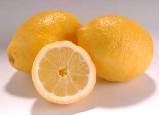

You can make better alternatives to the harsh cleaners you default to every time you clean. Look at the ingredients in the cleaning products you routinely use. If the list is long and includes chemicals you can’t pronounce, it may be time to try some safer, more eco-friendly alternatives.
You can make cleaning solutions for most household applications with water and a few ingredients: castile soap, distilled white vinegar, baking soda, washing soda and borax. You also can use lemon juice, salt, tea tree oil, club soda and rubbing alcohol, depending on the stain or item you want to clean.
To learn more about the right proportions to use when making your own cleaners (and appropriate uses for each solution) read Recipes for Safer Cleaners from the Children's Health Environmental Coalition. Greener Cleaners by Annie Berthold-Bond, an expert on the subject, includes recipes for toothpaste, lotion, shampoo and more. You’ll need a few more ingredients for some of those recipes.
Of course, even simple ingredients can cause skin irritation, so wear gloves when using them - especially washing soda and borax. And borax, though found in nature, can be toxic if ingested. Keep all cleaners safely away from children.
You may need to be a bit more patient when using natural cleaners. They’re not as potent as many commercial chemicals. For tough stains, leave the solution in place and let it work for you. Then apply a little “elbow grease.” You may not be able to simply wipe away the stain without scrubbing.
Share your own recipes, suggestions and experiences with homemade cleaners in the comments section below.|
 ISTOCKPHOTO/JORDI CASTILLO Lemon juice can be used to make a floor shining solution, or to clean your hands. |
TROY GRIEPENTROG You can make effective cleaners from these simple ingredients that you probably have in your kitchen cupboard or bathroom cabinet. |
|